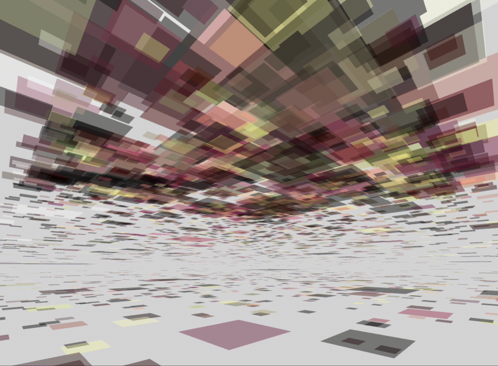
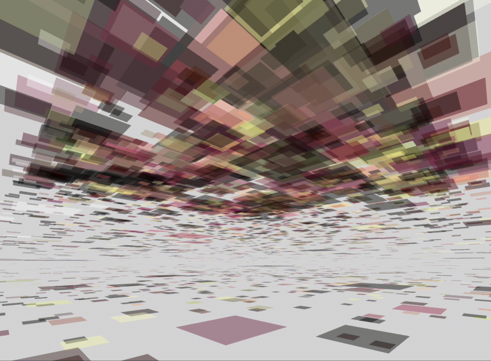

ReactiveCanvas
ReactiveCanvas is a creative art project lauched from December 2020. It is an interactive system that allows everyone to generate own artwork with customizable inputs and rulesets. People can enjoy interacting with their generated arts and download.
 

ReactiveCanvas is computed with the celular autometa algorithm based on the Three.js framework. The art of ReactiveCanvas is generated in dynamic 3D-dimension. The celular autometa algorithm encodes the diversity of color, form, space, and time. It allows people to create art freely and interact with it from different perspectives.